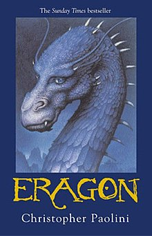

1. Şimşek Hırsızı
Babasının Yunan Tanrısı Poseidon ve annesinin ise sıradan bir insan olduğu Percy adındaki gencin zorlu hikayesini anlatıyor.

2. Rüzgarın Adı
Bir adamın evrenin anlamını arayışının ve gerek o arayışın gerekse de onu sürdürmesini sağlayan gem vurulamaz iradenin bir efsaneye dönüşmesinin öyküsü

3. Eragon
Yoksul bir çiftçinin yeğeni olan Eragon'un ormanda parlak, mavi bir taş bulması ile başlayan fantastik ve bir o kadar da heyecan veren yolculuğu

4. Bir Gün
Emma ve Dexter birbirlerine tamamen zıt sosyal yapılardan gelen iki genç insanın hikayesini anlatıyor.